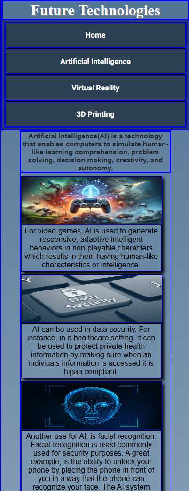
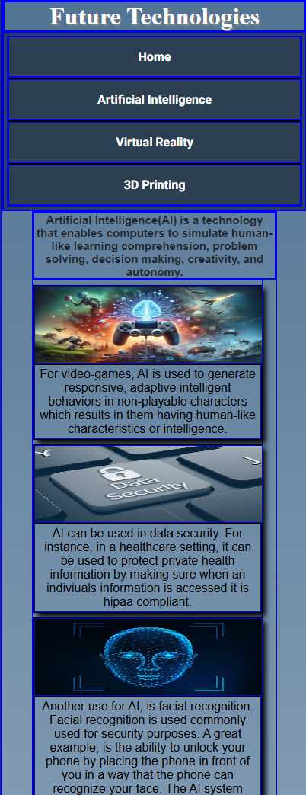
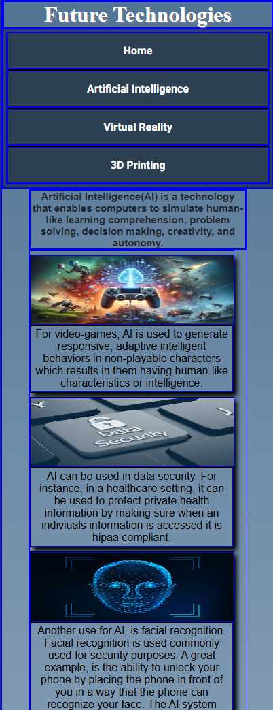
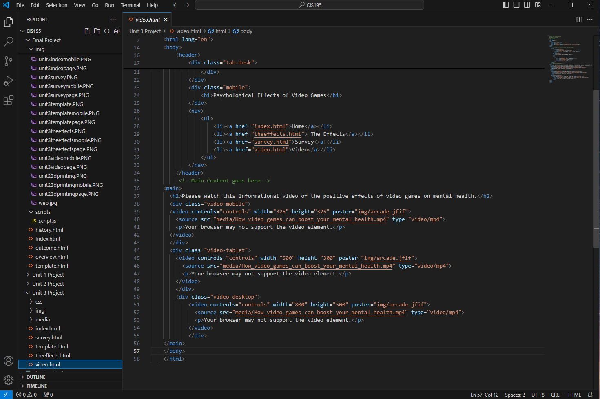
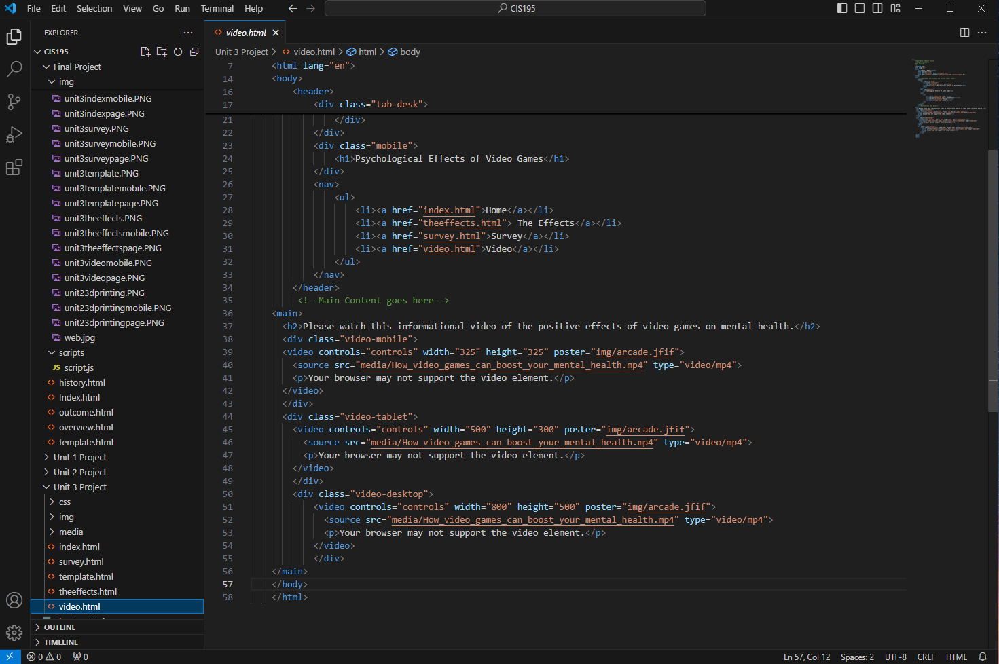

Below, you will find the previous three unit projects and what we have learned from each of these projects:
Unit 1 Project
This unit project was fairly introductory as it helped to give us an idea on how to properly lay out each element on an html document. It taught us how to place a the nav element along with the links to each of the pages. Lastly, we learned basic CSS to help with the layout and overall readability of our pages by changing margins, padding, font-sizes, background color, and more.
Screenshots for Unit 1 Project
Unit 1 Presentation Video
Unit 2 Project
There was a lot that transpired in this project that gave us a major foundation in learning HTML and CSS. This unit project taught us how to utilize the mobile-first strategy when working on a webpage and to gain the ability to style varying sizes of viewports using media queries. We also used what we learned from unit 1 project and built on that.
Below are some more ideas we learned:
How to incorporate custom google fonts
Structural(nth type of) and Dynamic(hovered or clicked) psuedo classes
Creating a favicon that is sized specifically for different devices, browsers or shortcuts
Utilizing the rgba() function, gradients, opacity property, text shadow, and box shadow
The placements of aside, article, and section elements
How to create a multiple column layout and using the CSS grid layout
The span element
The figure and figcaption element
Screenshots for Unit 2 Project

Unit 2 Presentation Video
Unit 3 Project
Unit 3 also focused on utilizing what was learned from the previous two units. We focused on using the mobile-first strategy when building each webpage and then using media queries to change the sizing of each viewport. We utilized the table element and how to style the table element for different viewports. CSS was used to style the table element to make it more distinctive on the page. Next we learned how to implement a form element, using form controls, submit and reset button, fieldsets, and general styling for the form. Lastly, we implemented the video element added controls to make the video element more user friendly.
 

 
